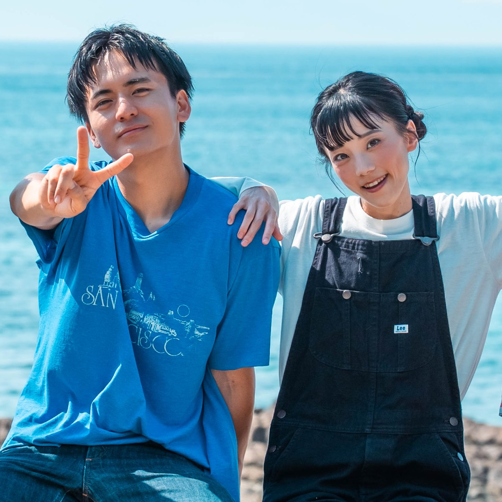

あなたのまちで生まれた物語を、あなたのまちの映画館で。
九州の短編映画が集う、小さな物語たちの映画祭。

何気ない日常、忘れられない風景、まちでの小さな出会い。
このまちには、語られるのを待っている物語がいくつもある。
「地元」をテーマに、九州の作り手が撮った短編映画を、地元の映画館に集める。スクリーンに映るのは、どこか懐かしい——あなたのまちの記憶。観たあとには、いつもの通りが少しだけ違って見える。
テーマは「地元」——あなたのまち。
あなたが撮った短編映画を、あなたのまちのスクリーンへ。九州の作り手からの応募をお待ちしています。